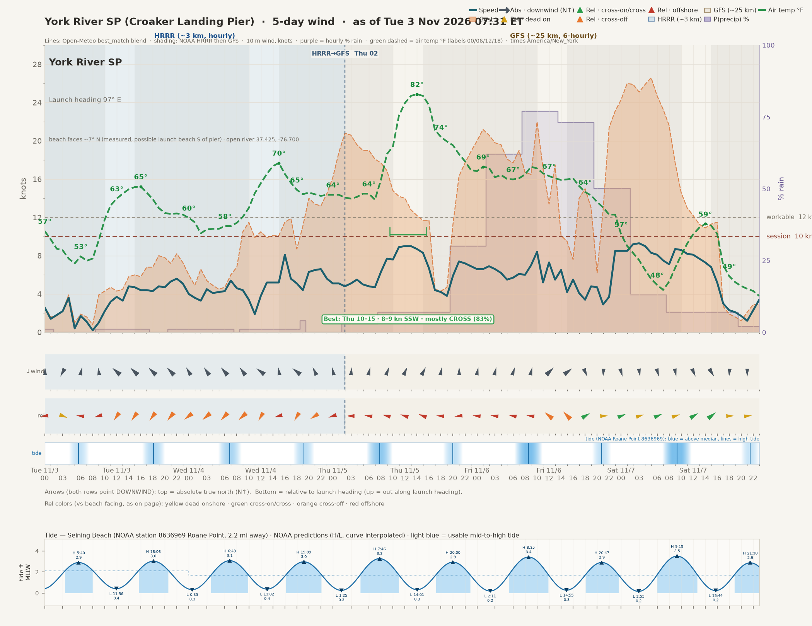
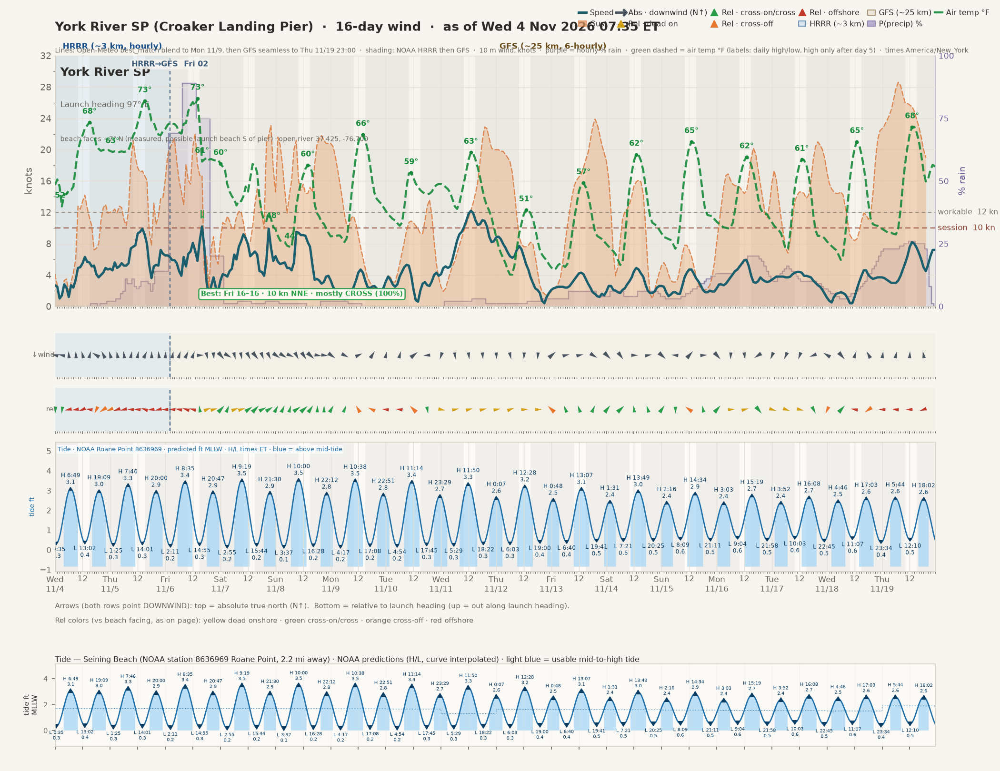
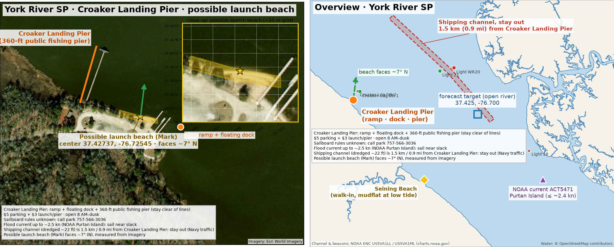
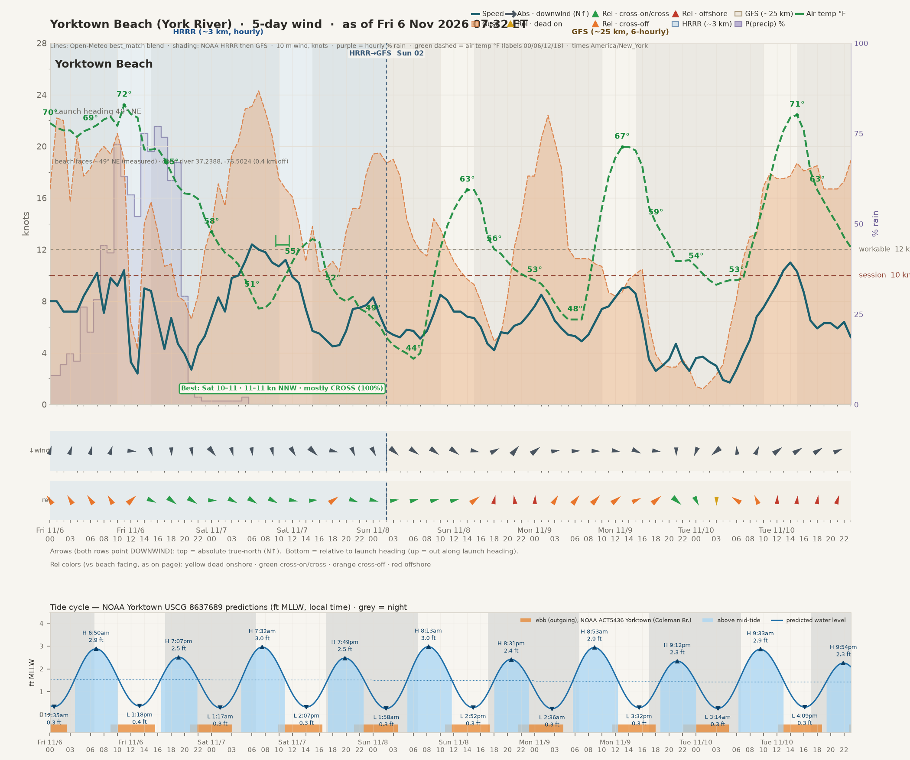
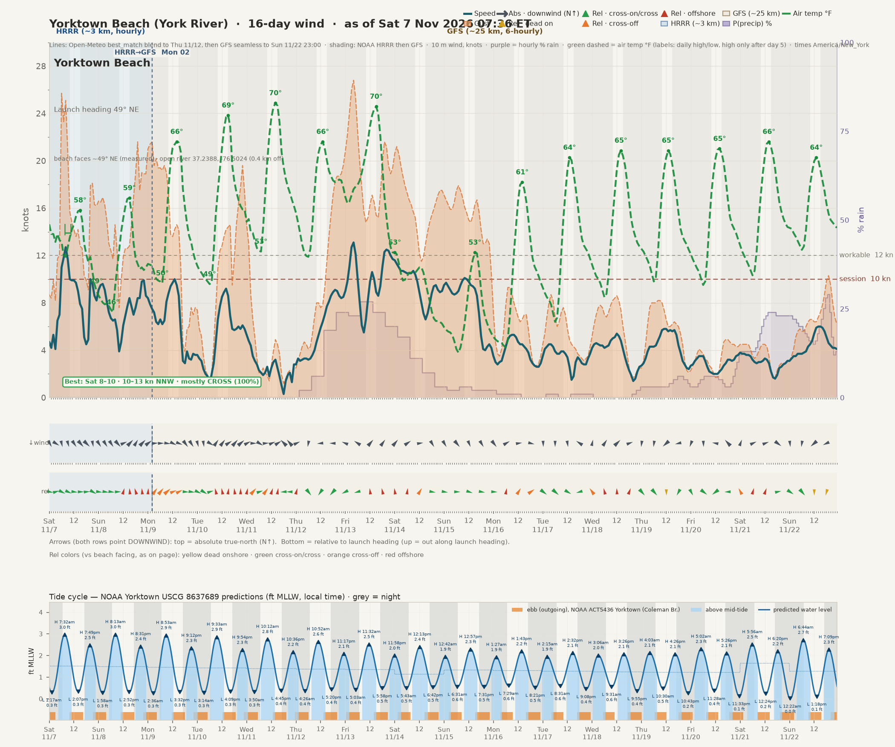
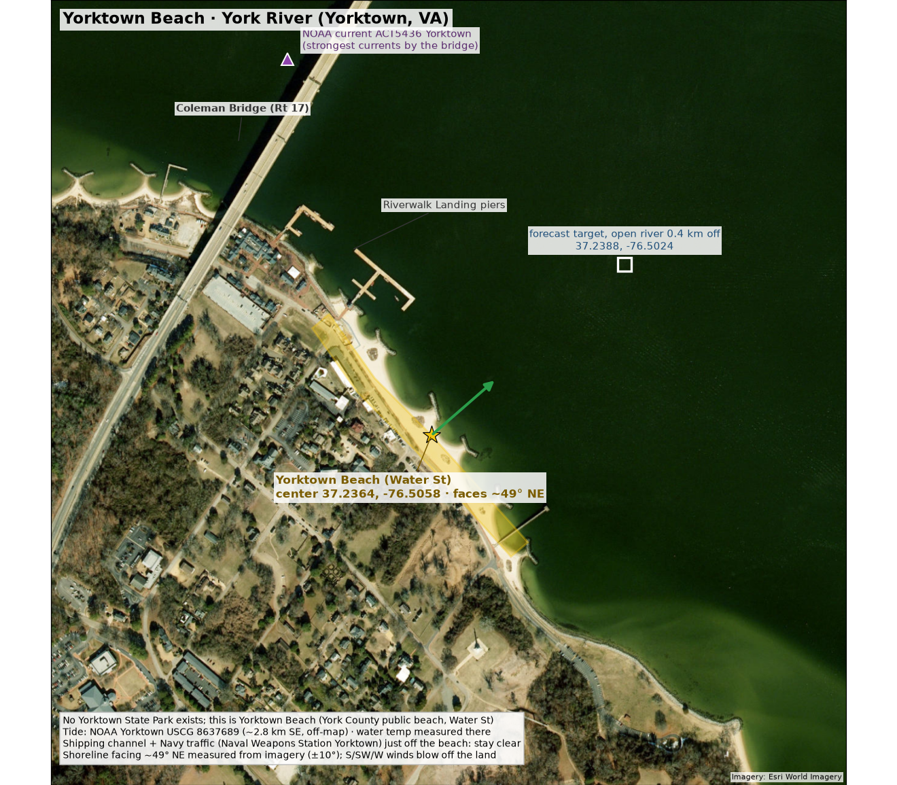

← all locations (va-lakes-wind.html) · jump to: Croaker Landing Pier · Yorktown Beach
York River · wind + tide · Croaker Landing Pier & Yorktown Beach
Mark's directions: N best · E good · W maybe/okay · S and SW won't work (blow over land, no-go); at each beach anything dead offshore vs its measured facing is also no-go.
Data: Open-Meteo best_match (HRRR, then GFS) · as of Fri 6 Nov 2026 07:32 ET
1 · York River State Park · Croaker Landing Pier
5-day

16-day

Daily max (knots) + tides
Tides: Seining Beach (NOAA station 8636969 Roane Point, 2.2 mi away) · NOAA CO-OPS predictions, MLLW, local time. Good wind + tide = 8 AM–6 PM hours with wind ≥10 kn, not offshore vs the 7° beach facing and not S/SW, while the tide is above the day's mid-tide level.
| Day | Max wind | Max gust | Dir at max | Hour | vs beach | High | Low | Mark's rating | Good wind + tide |
|---|---|---|---|---|---|---|---|---|---|
| Fri Nov 06 | 9.4 | 22.7 | SSW (211°) | 6 AM | cross-off | 8:35 AM 3.4 ft 8:47 PM 2.9 ft | 2:11 AM 0.2 ft 2:55 PM 0.3 ft | no (light) | |
| Sat Nov 07 | 14.0 | 25.1 | NNW (344°) | 7 AM | cross-on | 9:19 AM 3.5 ft 9:30 PM 2.9 ft | 2:55 AM 0.2 ft 3:44 PM 0.2 ft | best | ✅ 8 AM–1 PM |
| Sun Nov 08 | 7.7 | 21.4 | NW (321°) | 10 AM | cross-on | 10:00 AM 3.5 ft 10:12 PM 2.8 ft | 3:37 AM 0.1 ft 4:28 PM 0.2 ft | good (light) | |
| Mon Nov 09 | 8.3 | 23.1 | WNW (291°) | 1 PM | cross | 10:38 AM 3.5 ft 10:51 PM 2.8 ft | 4:17 AM 0.2 ft 5:08 PM 0.2 ft | maybe (light) | |
| Tue Nov 10 | 9.9 | 18.7 | WSW (238°) | 2 PM | cross-off | 11:14 AM 3.4 ft 11:29 PM 2.7 ft | 4:54 AM 0.2 ft 5:45 PM 0.3 ft | no (light) | |
| Wed Nov 11 | 5.0 | 7.4 | SE (138°) | 9 PM | cross-off | 11:50 AM 3.3 ft | 5:29 AM 0.3 ft 6:22 PM 0.3 ft | maybe (light) | |
| Thu Nov 12 | 7.8 | 19.2 | N (357°) | 10 AM | onshore | 12:07 AM 2.6 ft 12:28 PM 3.2 ft | 6:03 AM 0.3 ft 7:00 PM 0.4 ft | best (light) | |
| Fri Nov 13 | 6.5 | 15.7 | N (353°) | 12 AM | onshore | 12:48 AM 2.5 ft 1:07 PM 3.1 ft | 6:40 AM 0.4 ft 7:41 PM 0.5 ft | best (light) | |
| Sat Nov 14 | 7.9 | 19.4 | NNW (340°) | 1 PM | cross-on | 1:31 AM 2.4 ft 1:49 PM 3.0 ft | 7:21 AM 0.5 ft 8:25 PM 0.5 ft | best (light) | |
| Sun Nov 15 | 7.5 | 20.0 | NW (323°) | 11 AM | cross-on | 2:16 AM 2.4 ft 2:34 PM 2.9 ft | 8:09 AM 0.6 ft 9:11 PM 0.5 ft | good (light) | |
| Mon Nov 16 | 5.0 | 8.0 | WSW (254°) | 12 PM | cross-off | 3:03 AM 2.4 ft 3:19 PM 2.7 ft | 9:04 AM 0.6 ft 9:58 PM 0.5 ft | maybe (light) | |
| Tue Nov 17 | 3.7 | 3.5 | WSW (238°) | 12 AM | cross-off | 3:52 AM 2.4 ft 4:08 PM 2.7 ft | 10:03 AM 0.6 ft 10:45 PM 0.5 ft | no (light) | |
| Wed Nov 18 | 6.3 | 13.0 | N (11°) | 11 AM | onshore | 4:46 AM 2.5 ft 5:03 PM 2.6 ft | 11:07 AM 0.6 ft 11:34 PM 0.4 ft | best (light) | |
| Thu Nov 19 | 4.7 | 8.7 | E (90°) | 1 PM | cross | 5:44 AM 2.6 ft 6:02 PM 2.6 ft | 12:10 PM 0.5 ft | good (light) | |
| Fri Nov 20 | 3.7 | 5.2 | SSW (198°) | 10 PM | OFFSHORE | 6:40 AM 2.8 ft 6:59 PM 2.6 ft | 12:22 AM 0.3 ft 1:08 PM 0.4 ft | no (light) | |
| Sat Nov 21 | 4.9 | 8.6 | WSW (241°) | 12 PM | cross-off | 7:31 AM 3.1 ft 7:51 PM 2.7 ft | 1:10 AM 0.2 ft 2:03 PM 0.3 ft | no (light) |
Good wind + tide windows
- Sat Nov 07: 8 AM–1 PM
Map

2 · Yorktown Beach (Water St, Yorktown)
With this facing: N and E are cross-onshore (N best, E good per Mark), NE dead onshore, NW cross-shore (good), W cross-off (maybe), S/SW blow off the land (no).
5-day

16-day

Daily max (knots) + tides + current
Tides: NOAA Yorktown USCG 8637689 predictions, MLLW, local time. Current: NOAA ACT5436 Yorktown max flood/ebb/slack. Good wind + tide = 8 AM–6 PM hours with wind ≥10 kn, Mark's rating not "no" (S/SW and anything offshore of the 49° facing), tide above the day's mid-tide; "(ebb ✔)" = whole window on the outgoing tide (the blog's preference), "(part ebb)" = partly.
| Day | Max wind | Max gust | Dir at max | Hour | vs beach | High | Low | Current (Coleman Br.) | Mark's rating | Good wind + tide |
|---|---|---|---|---|---|---|---|---|---|---|
| Fri Nov 06 | 10.4 | 22.2 | SW (214°) | 11 AM | OFFSHORE | 6:50 AM 2.9 ft 7:07 PM 2.5 ft | 12:35 AM 0.3 ft 1:18 PM 0.4 ft | slack 2:31 AM flood 5:32 AM 1.7 kn slack 8:56 AM ebb 12:20 PM 1.9 kn slack 3:38 PM flood 5:59 PM 1.0 kn slack 8:43 PM | no | |
| Sat Nov 07 | 12.4 | 24.3 | N (351°) | 6 AM | cross-on | 7:32 AM 3.0 ft 7:49 PM 2.5 ft | 1:17 AM 0.3 ft 2:07 PM 0.3 ft | ebb 12:18 AM 1.9 kn slack 3:08 AM flood 6:16 AM 2.0 kn slack 9:52 AM ebb 1:13 PM 1.9 kn slack 4:35 PM flood 6:37 PM 0.8 kn slack 9:11 PM | best | ✅ 8 AM–11 AM (part ebb) |
| Sun Nov 08 | 8.5 | 19.5 | NW (323°) | 10 AM | cross | 8:13 AM 3.0 ft 8:31 PM 2.4 ft | 1:58 AM 0.3 ft 2:52 PM 0.3 ft | ebb 12:56 AM 2.0 kn slack 3:43 AM flood 6:54 AM 2.1 kn slack 10:42 AM ebb 1:57 PM 1.9 kn slack 5:24 PM flood 7:08 PM 0.7 kn slack 9:36 PM | good (light) | |
| Mon Nov 09 | 9.1 | 22.4 | WNW (290°) | 2 PM | cross-off | 8:53 AM 2.9 ft 9:12 PM 2.3 ft | 2:36 AM 0.3 ft 3:32 PM 0.3 ft | ebb 1:31 AM 2.1 kn slack 4:19 AM flood 7:30 AM 2.2 kn slack 11:27 AM ebb 2:36 PM 1.7 kn slack 6:06 PM flood 7:37 PM 0.5 kn slack 10:04 PM | maybe (light) | |
| Tue Nov 10 | 11.0 | 18.9 | WSW (238°) | 2 PM | OFFSHORE | 9:33 AM 2.9 ft 9:54 PM 2.3 ft | 3:14 AM 0.3 ft 4:09 PM 0.3 ft | ebb 2:07 AM 2.0 kn slack 4:56 AM flood 8:05 AM 2.1 kn slack 12:07 PM ebb 3:15 PM 1.6 kn slack 6:44 PM flood 8:12 PM 0.5 kn slack 10:40 PM | no | |
| Wed Nov 11 | 4.7 | 9.9 | SE (135°) | 9 PM | cross | 10:12 AM 2.8 ft 10:36 PM 2.2 ft | 3:50 AM 0.3 ft 4:45 PM 0.4 ft | ebb 2:45 AM 1.9 kn slack 5:34 AM flood 8:42 AM 1.9 kn slack 12:44 PM ebb 3:54 PM 1.4 kn slack 7:22 PM flood 8:54 PM 0.5 kn slack 11:26 PM | maybe (light) | |
| Thu Nov 12 | 9.4 | 16.9 | N (6°) | 10 AM | cross-on | 10:52 AM 2.6 ft 11:17 PM 2.1 ft | 4:26 AM 0.4 ft 5:20 PM 0.4 ft | ebb 3:28 AM 1.6 kn slack 6:15 AM flood 9:21 AM 1.7 kn slack 1:18 PM ebb 4:36 PM 1.3 kn slack 8:02 PM flood 9:41 PM 0.6 kn | best (light) | |
| Fri Nov 13 | 7.6 | 15.7 | N (357°) | 12 AM | cross-on | 11:32 AM 2.5 ft 11:58 PM 2.0 ft | 5:03 AM 0.4 ft 5:58 PM 0.5 ft | slack 12:20 AM ebb 4:17 AM 1.3 kn slack 6:59 AM flood 10:01 AM 1.6 kn slack 1:52 PM ebb 5:19 PM 1.3 kn slack 8:44 PM flood 10:27 PM 0.6 kn | best (light) | |
| Sat Nov 14 | 8.3 | 17.3 | N (349°) | 3 PM | cross-on | 12:13 PM 2.4 ft | 5:43 AM 0.5 ft 6:42 PM 0.5 ft | slack 1:19 AM ebb 5:11 AM 1.1 kn slack 7:45 AM flood 10:42 AM 1.4 kn slack 2:28 PM ebb 6:05 PM 1.3 kn slack 9:27 PM flood 11:11 PM 0.6 kn | best (light) | |
| Sun Nov 15 | 8.1 | 19.4 | NW (325°) | 11 AM | cross | 12:42 AM 1.9 ft 12:57 PM 2.3 ft | 6:31 AM 0.6 ft 7:31 PM 0.5 ft | slack 2:20 AM ebb 6:06 AM 0.9 kn slack 8:32 AM flood 11:23 AM 1.3 kn slack 3:08 PM ebb 6:53 PM 1.3 kn slack 10:09 PM flood 11:56 PM 0.7 kn | good (light) | |
| Mon Nov 16 | 6.1 | 9.5 | WSW (243°) | 1 PM | OFFSHORE | 1:27 AM 1.9 ft 1:43 PM 2.2 ft | 7:29 AM 0.6 ft 8:21 PM 0.5 ft | slack 3:19 AM ebb 7:02 AM 0.9 kn slack 9:19 AM flood 12:07 PM 1.2 kn slack 3:52 PM ebb 7:42 PM 1.3 kn slack 10:49 PM | no (light) | |
| Tue Nov 17 | 4.5 | 6.4 | WSW (245°) | 12 AM | OFFSHORE | 2:15 AM 1.9 ft 2:32 PM 2.1 ft | 8:31 AM 0.6 ft 9:08 PM 0.4 ft | flood 12:44 AM 0.7 kn slack 4:15 AM ebb 7:56 AM 0.9 kn slack 10:09 AM flood 12:56 PM 1.1 kn slack 4:37 PM ebb 8:29 PM 1.3 kn slack 11:28 PM | no (light) | |
| Wed Nov 18 | 7.2 | 13.6 | NNE (19°) | 10 AM | cross-on | 3:06 AM 2.0 ft 3:26 PM 2.1 ft | 9:31 AM 0.6 ft 9:55 PM 0.4 ft | flood 1:37 AM 0.8 kn slack 5:17 AM ebb 8:49 AM 0.9 kn slack 11:05 AM flood 1:50 PM 1.1 kn slack 5:22 PM ebb 9:12 PM 1.4 kn | best (light) | |
| Thu Nov 19 | 5.8 | 9.7 | ENE (57°) | 10 AM | onshore | 4:03 AM 2.1 ft 4:26 PM 2.1 ft | 10:30 AM 0.5 ft 10:43 PM 0.2 ft | slack 12:09 AM flood 2:34 AM 0.9 kn slack 6:22 AM ebb 9:43 AM 1.0 kn slack 12:10 PM flood 2:45 PM 1.0 kn slack 6:04 PM ebb 9:54 PM 1.5 kn | good (light) | |
| Fri Nov 20 | 3.8 | 5.2 | NE (35°) | 3 AM | onshore | 5:02 AM 2.3 ft 5:26 PM 2.1 ft | 11:28 AM 0.4 ft 11:33 PM 0.1 ft | slack 12:51 AM flood 3:31 AM 1.2 kn slack 7:24 AM ebb 10:40 AM 1.2 kn slack 1:22 PM flood 3:39 PM 0.9 kn slack 6:42 PM ebb 10:37 PM 1.8 kn | good (light) | |
| Sat Nov 21 | 4.5 | 7.6 | WSW (239°) | 4 AM | OFFSHORE | 5:56 AM 2.5 ft 6:20 PM 2.2 ft | 12:24 PM 0.2 ft | slack 1:33 AM flood 4:25 AM 1.6 kn slack 8:21 AM ebb 11:37 AM 1.4 kn slack 2:28 PM flood 4:32 PM 0.9 kn slack 7:20 PM ebb 11:22 PM 2.1 kn | no (light) |
Good wind + tide windows
- Sat Nov 07: 8 AM–11 AM (part ebb)
Map

Chart arrow colors are relative to each beach's measured facing (the chart colors don't apply Mark's S/SW no-go; the tables do).